May 15, 2026
Project Sections
- Motivation and transmission line background
- Mini Lab 1: Ideal transmission line terminations
- Mini Lab 2: Line length sweep
- Mini Lab 3: Microstrip implementation and substrate sweeps
- Impedance matching techniques
- Mini Lab 4: Quarter-wave transformer
- Mini Lab 5: Single-stub matching
- Mini Lab 6: Double-stub matching
- Mini Lab 7: Final comparison
Motivation
As I continue to develop my engineering expertise, I aim to strengthen both my theoretical understanding and my proficiency with industry-standard tools and software. One of the most widely used tools in RF and microwave engineering is Keysight ADS, a powerful platform for schematic capture, circuit simulation, and electromagnetic analysis.
Although I have previously used ADS in an academic setting, I wanted to gain a deeper and more practical understanding of the software by applying it to fundamental concepts in RF and hardware engineering. In my experience, one of the best ways to learn an engineering tool is to use it to revisit core principles and explore them through simulation.
For this project, I chose to focus on transmission lines, a concept that is fundamental to both RF and digital hardware design. A transmission line is any physical structure that guides electromagnetic waves from one point to another. Common examples include coaxial cables, microstrip traces on printed circuit boards, and free-space propagation between antennas.
Many engineers initially associate transmission lines with large-scale systems such as power lines, radar systems, or radio communications. In reality, transmission line effects are present in nearly all modern electronic systems. As devices become smaller and operating frequencies continue to increase, even simple PCB traces such as clock lines, high-speed digital interfaces, and RF interconnects may need to be treated as transmission lines.
Transmission Line Background
A transmission line is a structure that guides electromagnetic energy from one point to another. Unlike an ideal wire, which is assumed to transfer signals instantaneously and without loss, a real transmission line exhibits distributed electrical properties along its length. Every infinitesimal section of the line contains series inductance and resistance, as well as shunt capacitance and conductance.
These distributed parameters cause voltage and current to propagate as waves with finite velocity. The ratio between voltage and current for a traveling wave is known as the characteristic impedance, denoted by \(Z_0\). This impedance is determined by the physical geometry of the line and the materials from which it is constructed.
A conductor should be treated as a transmission line when its electrical length becomes a significant fraction of the signal wavelength. A common engineering rule of thumb is that transmission line effects become important when the physical length exceeds approximately one-tenth of the wavelength:
In digital systems, the relevant wavelength is determined by the highest significant frequency component of the signal, which is closely related to the rise and fall times rather than the clock frequency alone. When this condition is met, reflections, propagation delay, and impedance discontinuities can no longer be neglected.
Reflection Coefficient and Impedance Matching
One of the most important quantities in transmission line analysis is the reflection coefficient, denoted by \(\Gamma\). It describes the ratio between the reflected voltage wave and the incident voltage wave at any point where an impedance discontinuity is encountered. Such discontinuities may occur at the load, at the source, or anywhere along the transmission path where the impedance changes.
In general, \(\Gamma\) is complex. Its magnitude indicates how much of the incident wave is reflected, while its phase indicates the phase shift introduced by the discontinuity. For passive loads:
The following special cases are useful reference points for the rest of the project. They also explain the ideal termination cases used in the first mini lab.
| Condition | Reflection coefficient | Meaning |
|---|---|---|
| Matched load | \(\Gamma = 0\) | No reflection occurs. |
| Open circuit | \(\Gamma = +1\) | All incident voltage is reflected with the same polarity. |
| Short circuit | \(\Gamma = -1\) | All incident voltage is reflected with a 180° phase inversion. |
Impedance matching is the process of making the impedance seen by a transmission line equal to its characteristic impedance. Under this condition, the reflection coefficient becomes zero and the available power is delivered to the load. In RF systems this improves power transfer and reduces standing waves; in high-speed digital systems it reduces ringing, overshoot, undershoot, and timing errors.
Mini Lab 1: Ideal Transmission Line Terminations
With the basic theory established, the first mini lab examines how an ideal lossless transmission line responds to several common load terminations. The goal is to observe how each termination affects the input reflection coefficient.
Objective
The circuit compares four cases: a matched 50 Ω load, an open circuit, a short circuit, and a 100 Ω mismatched load. Each case is simulated using an S-parameter analysis so that the reflection coefficient can be compared directly against the theoretical values.
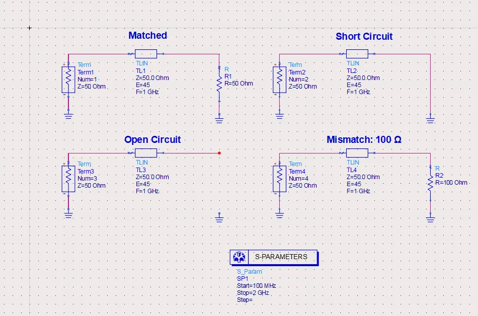
Expected Results
The theoretical reflection coefficients at the load are:
| Load condition | \(\Gamma\) | Magnitude | Phase |
|---|---|---|---|
| Matched, 50 Ω | 0 | 0 | Undefined |
| Open circuit | +1 | 1 | 0° |
| Short circuit | -1 | 1 | 180° |
| 100 Ω load | \(\frac{100-50}{100+50}=\frac{1}{3}\) | 0.333 | 0° |
Simulation Results and Discussion
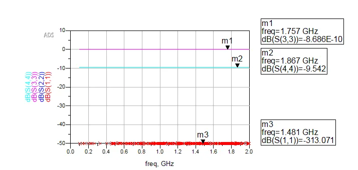
Although the traces are labeled as \(S(1,1)\), \(S(2,2)\), \(S(3,3)\), and \(S(4,4)\), they all represent the same physical quantity: the reflection coefficient \(\Gamma\) measured at the input of each corresponding one-port circuit. ADS assigns a unique port number to each separate test case, but for each one-port network the only S-parameter is the input reflection coefficient:
The matched 50 Ω case produces essentially no reflection. Ideally this corresponds to \(20\log_{10}|\Gamma|=-\infty\) dB; in practice ADS reports a very large negative value limited by numerical precision. The open and short circuits both have \(|\Gamma|=1\), corresponding to 0 dB. For the 100 Ω load:
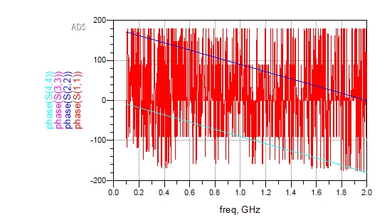
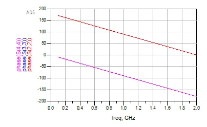
For a lossless transmission line, the input reflection coefficient is related to the load reflection coefficient by:
This equation shows that a lossless transmission line preserves the magnitude of the reflection coefficient while changing only its phase. The phase varies linearly with frequency because the electrical length of the line increases with frequency.
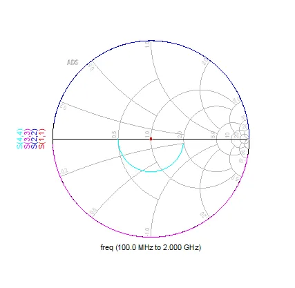
On the Smith chart, the matched load is located at the center where \(|\Gamma|=0\). The open and short circuits lie on the outer edge where \(|\Gamma|=1\), with phases of 0° and 180° respectively. The 100 Ω load appears on the real axis with \(|\Gamma|=1/3\). As frequency changes, each nonzero reflection coefficient rotates around the center along a circle of constant radius.
Key Takeaways
- A matched load produces no reflections.
- Open and short circuits reflect all incident power.
- Partial mismatches reflect only a portion of the incident wave.
- A lossless transmission line preserves the magnitude of the reflection coefficient.
- On the Smith chart, changing phase appears as motion along a circle of constant radius.
Mini Lab 2: Line Length Sweep
In Mini Lab 1, the line preserved reflection magnitude while rotating phase. In this mini lab, that behavior is explored directly by sweeping the electrical length of an ideal line connected to a fixed 100 Ω load.
Objective
The electrical length is swept from 0° to 360° in 5° increments at 1 GHz. The simulation observes how \(S_{11}\), phase, and the Smith chart location change with line length.
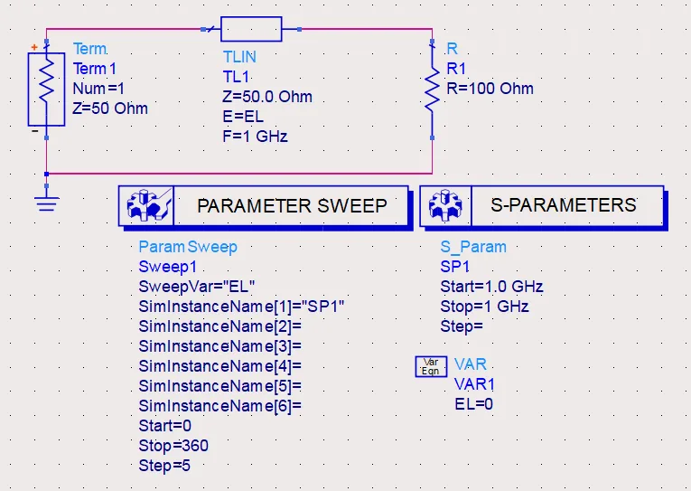
Theoretical Background
The load reflection coefficient is again \(1/3\), so the magnitude is expected to remain at approximately -9.54 dB. The input reflection coefficient is:
Because the reflected wave travels to the load and back, the phase rotates at twice the electrical length:
This means a 360° electrical-length sweep produces two complete rotations of the reflection coefficient.
Expected Results
- The magnitude of \(S_{11}\) remains approximately -9.54 dB.
- The phase of \(S_{11}\) varies linearly with electrical length.
- The Smith chart shows a circle of constant radius \(|\Gamma|=1/3\).
- Two full rotations occur as electrical length is swept from 0° to 360°.
Simulation Results and Discussion
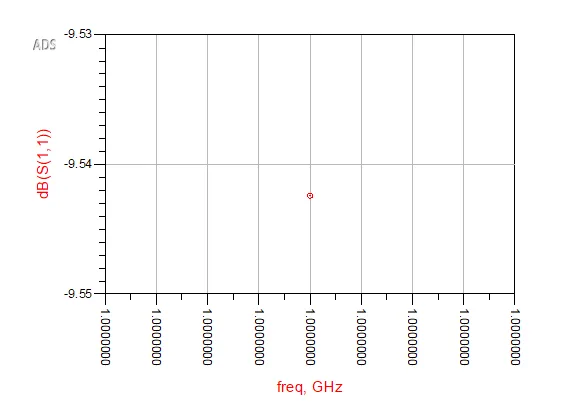
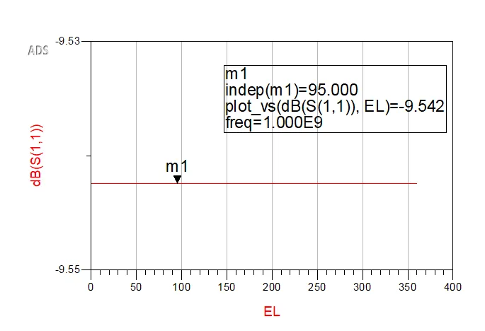
Figures 7 and 8 show that the reflection coefficient magnitude remains constant at approximately -9.54 dB. This confirms that changing the length of a lossless line does not change the amount of reflected power.
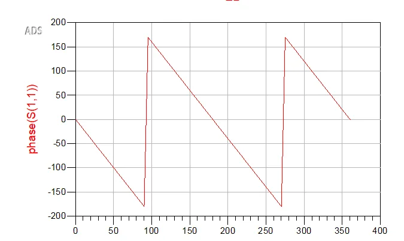
The Smith chart trajectory forms a circle centered at the origin. Each point represents the same reflection magnitude but a different phase. Although the physical load remains purely resistive, the input impedance seen by the source changes continuously with line length and may appear inductive, capacitive, or purely real depending on the observation point.
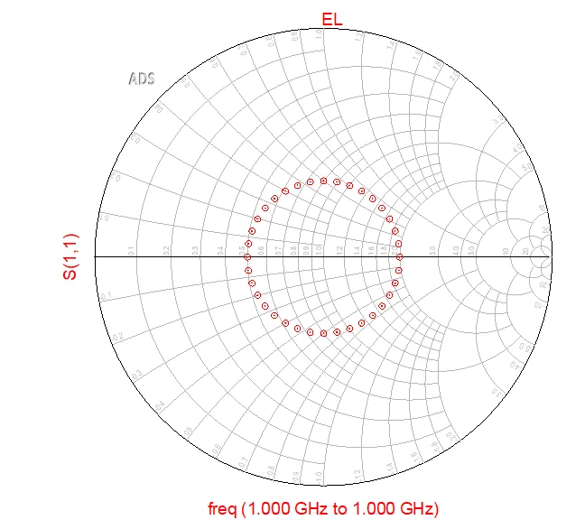
The phase decreases linearly as electrical length increases. The sawtooth shape occurs because ADS wraps phase into the range of ±180°. Since the reflection experiences a round-trip phase shift, a 360° electrical-length sweep produces two complete Smith chart rotations.
Key Takeaways
- The reflection coefficient magnitude depends on the impedance mismatch, not the lossless line length.
- Changing line length alters the phase of the reflection coefficient.
- The input impedance can vary dramatically even though the physical load is unchanged.
- On the Smith chart, a lossless line moves the reflection coefficient along a constant-radius circle.
- A 360° line-length sweep produces two rotations because the reflected wave undergoes a round trip.
Mini Lab 3: Microstrip Implementation and Substrate Parameter Sweep
The first two mini labs used ideal transmission lines whose characteristic impedance and electrical length were specified directly. Real PCB transmission lines are physical structures whose electrical behavior is determined by geometry and materials. This mini lab connects the ideal theory to a practical microstrip implementation.
Objective
An ideal 50 Ω, 90° transmission line at 1 GHz is converted into an equivalent microstrip line using ADS LineCalc. After that, trace width, substrate height, and dielectric constant are swept to observe how physical parameters affect impedance and phase delay.
Simulation Setup
The setup uses an \(MSUB\) substrate definition and an \(MLIN\) microstrip line. The \(MSUB\) block defines dielectric constant, substrate height, metal thickness, conductivity, and loss tangent. The \(MLIN\) block defines trace width and length.
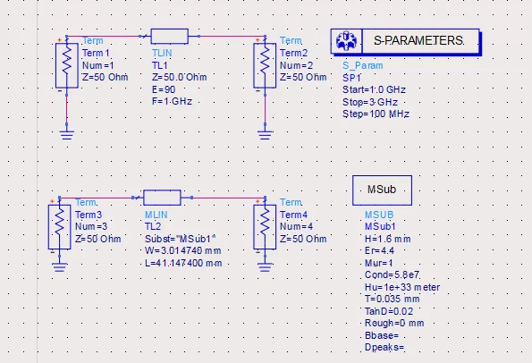
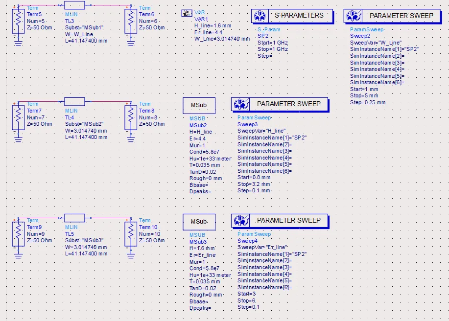
For the selected FR-4 substrate, with \(\varepsilon_r=4.4\), substrate thickness of 1.6 mm, and standard copper thickness, LineCalc determined a trace width of approximately 3.01 mm and a physical length of approximately 41.15 mm.
For the width, height, and dielectric sweeps, the plotted impedance is extracted from the simulated input reflection coefficient at 1 GHz using the reflection-to-impedance relationship. Since each sweep is evaluated at the design frequency in a 50 Ω environment, this input impedance provides a practical estimate of the microstrip characteristic impedance for each physical geometry.
Theoretical Background
The characteristic impedance of a microstrip line is determined mainly by the trace width-to-height ratio and the effective dielectric constant:
The propagation velocity is approximately:
Since the fields of a microstrip exist partly in air and partly in the dielectric, the effective dielectric constant satisfies:
Simulation Results and Discussion
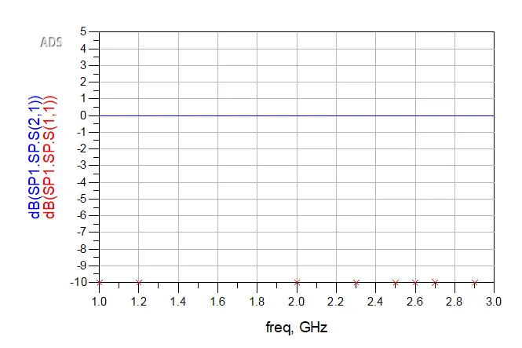
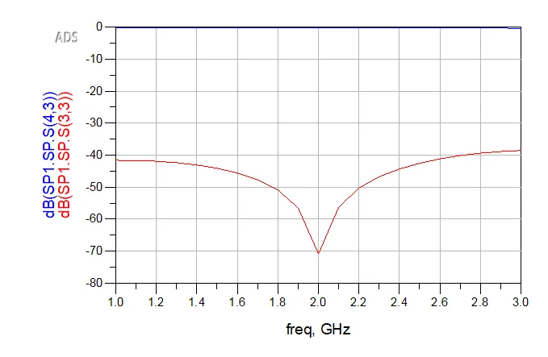
Figures 13 and 14 compare the ideal line with the synthesized microstrip. The microstrip implementation closely reproduces the intended electrical behavior, validating the LineCalc synthesis before the parameter sweeps are performed.
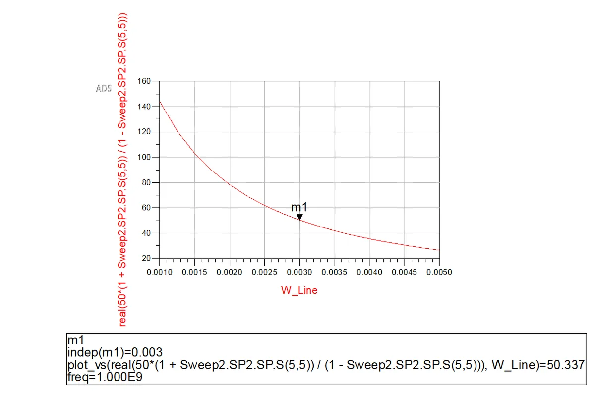
As trace width increases, characteristic impedance decreases. A wider conductor increases capacitance to the ground plane and reduces the ratio of distributed inductance to capacitance:
The relationship is nonlinear, with the most rapid impedance change occurring at narrow widths. The marker near 3.01 mm confirms the 50 Ω design point.
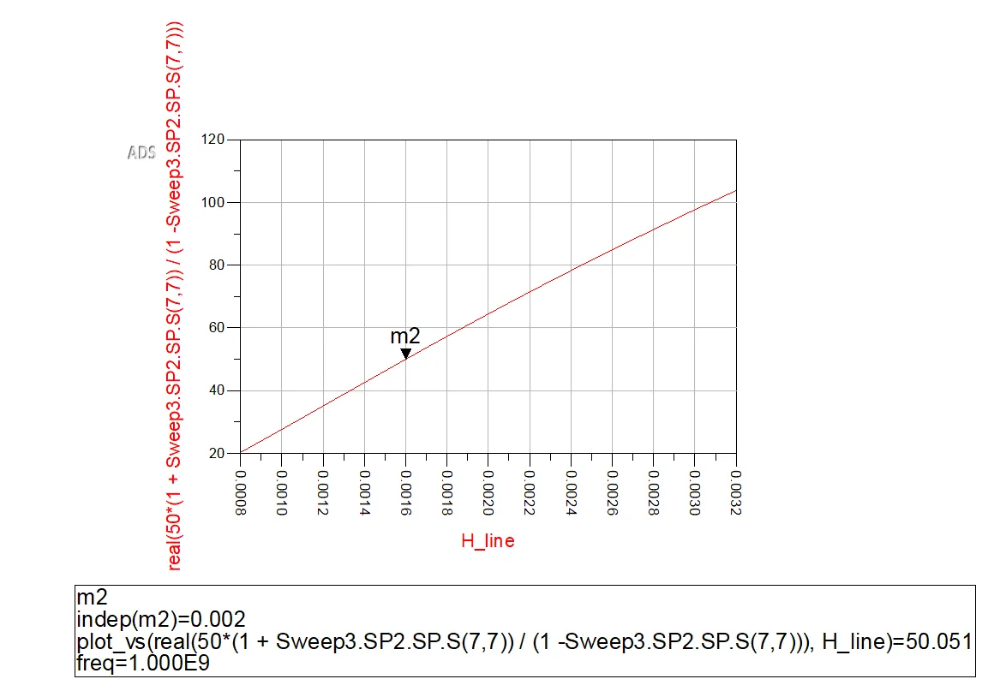
Increasing substrate height moves the trace farther from the ground plane, reducing electric-field coupling and lowering capacitance per unit length. As a result, characteristic impedance increases. At the nominal height of 1.6 mm, the impedance is approximately 50 Ω.
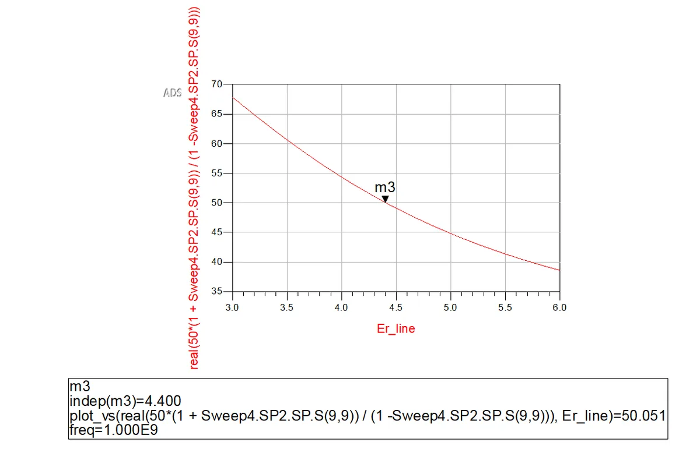
As dielectric constant increases, more of the electric field is concentrated in the substrate. This increases distributed capacitance and reduces characteristic impedance. In this sweep, increasing \(\varepsilon_r\) from 3 to 6 reduces the extracted characteristic impedance from roughly 67 Ω to 39 Ω.
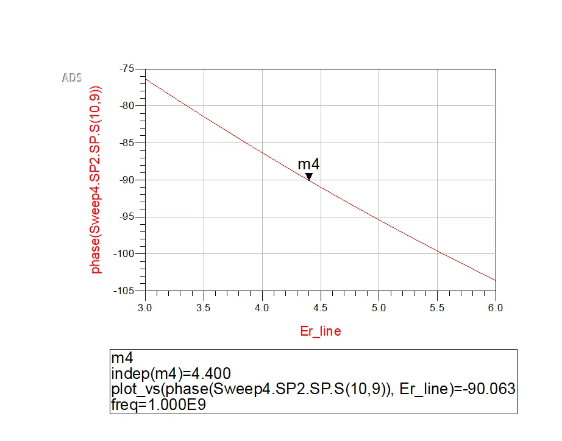
Increasing dielectric constant also decreases propagation velocity and shortens wavelength. The same physical line therefore becomes electrically longer, so the transmission phase becomes more negative. At \(\varepsilon_r=4.4\), the phase is approximately -90°, matching the target electrical length used during LineCalc synthesis.
Key Takeaways
- Real transmission lines are defined by geometry and material properties.
- Increasing trace width decreases characteristic impedance.
- Increasing substrate height increases characteristic impedance.
- Increasing dielectric constant decreases characteristic impedance.
- Increasing dielectric constant also increases electrical length and phase delay.
- ADS LineCalc efficiently converts desired electrical parameters into practical PCB dimensions.
Impedance Matching Techniques
In the earlier sections, impedance matching was introduced as the condition in which the impedance seen by a transmission line equals its characteristic impedance. In practice, loads are often not equal to the system impedance. Antennas, amplifiers, filters, and other RF components frequently present impedances that differ from the standard 50 Ω environment.
The goal of impedance matching is to insert a network between the source and the load that transforms the load impedance into the desired system impedance. In the following mini labs, three classical transmission line matching techniques are compared: the quarter-wave transformer, single-stub matching, and double-stub matching.
Mini Lab 4: Quarter-Wave Transformer
The quarter-wave transformer is one of the simplest impedance matching techniques. It uses a single 90° transmission line section with a carefully chosen characteristic impedance to match two real impedances at a specific frequency.
Objective
This mini lab matches a 100 Ω resistive load to a 50 Ω source at 1 GHz using a quarter-wave transformer.
Theoretical Background
A 90° line transforms the load impedance according to:
To obtain a perfect match, \(Z_{in}=Z_0\), so:
For \(Z_0=50\ \Omega\) and \(Z_L=100\ \Omega\):
Simulation Setup
The circuit uses a 70.71 Ω transmission line with 90° electrical length at 1 GHz, terminated by a 100 Ω load. The S-parameter simulation sweeps from 0.8 GHz to 1.2 GHz in 10 MHz steps.
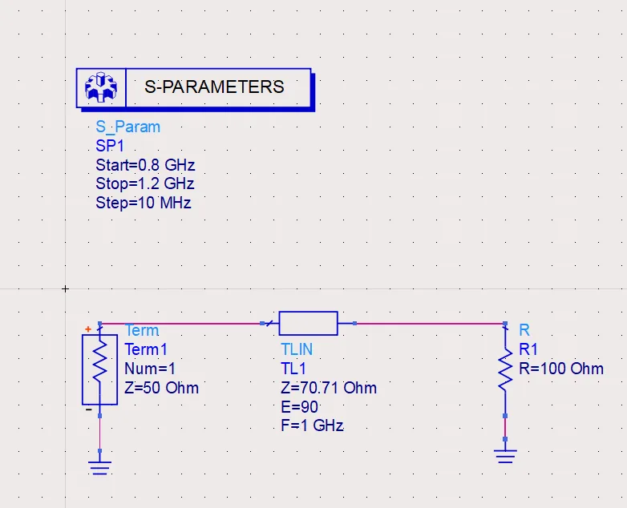
Expected Results
At 1 GHz, the transformed impedance should be exactly 50 Ω, giving \(\Gamma=0\) and ideally \(S_{11}=-\infty\) dB. Away from 1 GHz, the electrical length is no longer exactly 90°, so the match degrades.
Simulation Results and Discussion
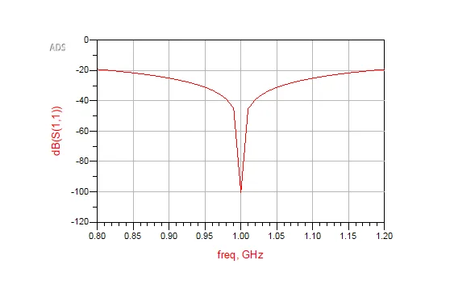
A deep minimum occurs at 1 GHz, where the line is exactly one-quarter wavelength long. At this frequency, the 100 Ω load is transformed into 50 Ω, producing an excellent match. The simulated reflection coefficient reaches approximately -100 dB, indicating that the residual reflection is limited by numerical precision.
As frequency moves away from 1 GHz, the electrical length deviates from 90°. The impedance transformation becomes imperfect and the reflection coefficient increases. This illustrates the main limitation of the quarter-wave transformer: it provides an exact match at a single design frequency with finite bandwidth around that point.
Key Takeaways
- A quarter-wave transformer can match two real impedances using one transmission line section.
- The required transformer impedance is the geometric mean of the source and load impedances.
- A perfect match occurs when the line is exactly 90° long at the design frequency.
- The match degrades as frequency moves away from the design frequency.
- The quarter-wave transformer is simple, elegant, and inherently narrowband.
Mini Lab 5: Single-Stub Matching
The quarter-wave transformer is useful for matching real impedances. Many practical RF loads, however, are complex and contain both resistive and reactive components. Single-stub matching is more flexible because it uses a shunt stub to cancel the reactive portion of the admittance.
Objective
This mini lab matches the complex load \(Z_L=25+j25\ \Omega\) to a 50 Ω system at 1 GHz. This load was chosen intentionally because it is not purely real, so it cannot be matched with a simple quarter-wave transformer alone. It also normalizes cleanly to \(z_L=0.5+j0.5\), making it a useful example for visualizing the single-stub matching process on the Smith chart.
The design is performed manually on the Smith chart to show how the impedance evolves along the transmission line and how the shunt stub cancels the remaining susceptance.
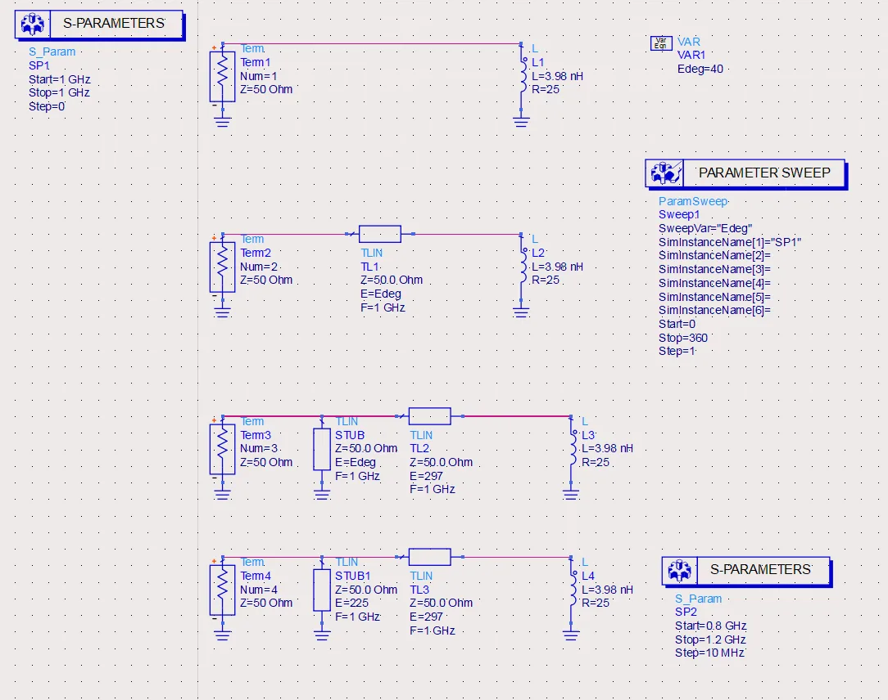
Theoretical Background
The load is first normalized to the system impedance:
Because the stub is connected in shunt, it is more convenient to work in admittance:
The design process is to move along the main line until the normalized admittance has a real part of 1, then add a shunt stub that cancels the remaining susceptance:
Manual Smith Chart Design
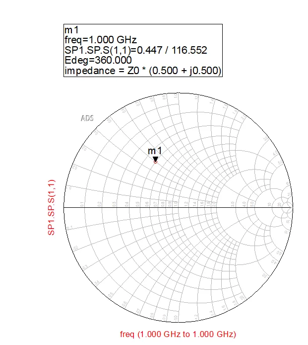
The normalized load \(z_L=0.5+j0.5\) lies in the inductive half of the Smith chart. Converting to admittance gives \(y_L=1-j1\).
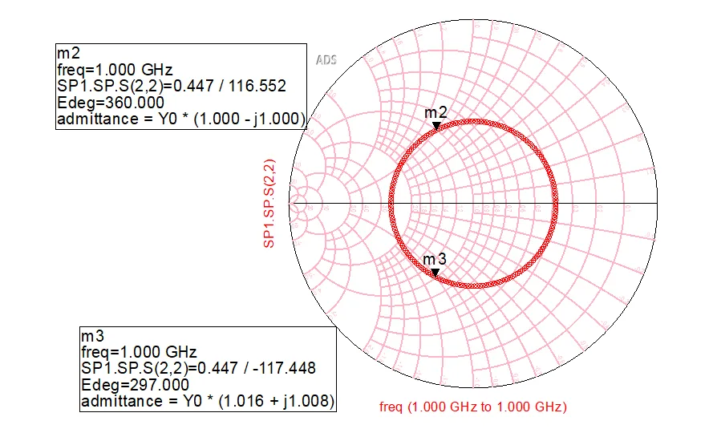
A 50 Ω transmission line is swept until the admittance reaches the \(g=1\) circle. At approximately 297°, the normalized admittance is about \(1.016+j1.008\), effectively \(1+j1\). At this point, the conductance is correct and only the susceptance needs to be canceled.
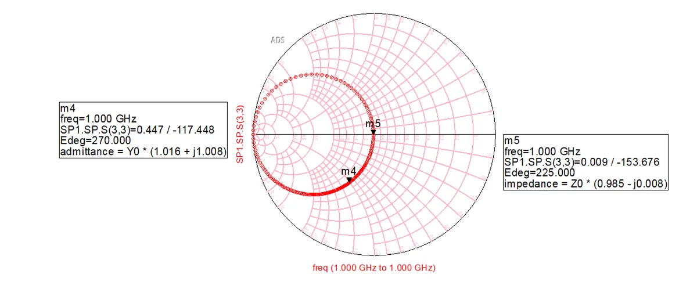
A short-circuited shunt stub is adjusted until it contributes approximately \(-j1\) normalized susceptance. In the simulation, a stub length of approximately 225° produces a final normalized impedance of about \(0.985-j0.008\), which is essentially a 50 Ω match.
Simulation Results and Discussion
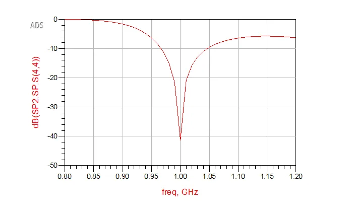
At 1 GHz, the reflection coefficient reaches approximately -40 dB, indicating an excellent match. The small residual reflection is mainly due to manual selection of line and stub lengths using finite sweep resolution. Away from 1 GHz, the electrical lengths of the main line and stub change, so the match degrades.
Final Design Parameters
| Load impedance | \(25+j25\ \Omega\) |
|---|---|
| Main line impedance | 50 Ω |
| Main line electrical length | 297° |
| Stub type | Short-circuited shunt stub |
| Stub impedance | 50 Ω |
| Stub electrical length | 225° |
| Design frequency | 1 GHz |
Key Takeaways
- Single-stub matching can match complex loads using only transmission line sections.
- The design is most naturally performed using admittance on the Smith chart.
- The main line is adjusted until the conductance becomes 1.
- The shunt stub cancels the remaining susceptance.
- Two valid matching solutions usually exist.
- ADS includes optimization tools that can automatically determine line and stub lengths. Here, the design was performed manually to make the Smith chart movement clear.
Mini Lab 6: Double-Stub Matching
Single-stub matching is effective, but it requires placing the stub at a specific distance from the load. In practical layouts, tuning-element locations may be constrained by PCB geometry, connectors, or mechanical limitations. Double-stub matching addresses this by using two adjustable shunt stubs at fixed positions.
Objective
This mini lab matches the same complex load, \(Z_L=25+j25\ \Omega\), to a 50 Ω system at 1 GHz. The first stub is placed 30° away from the load, and the second stub is placed 90° away from the first stub. Only the stub lengths are adjusted.
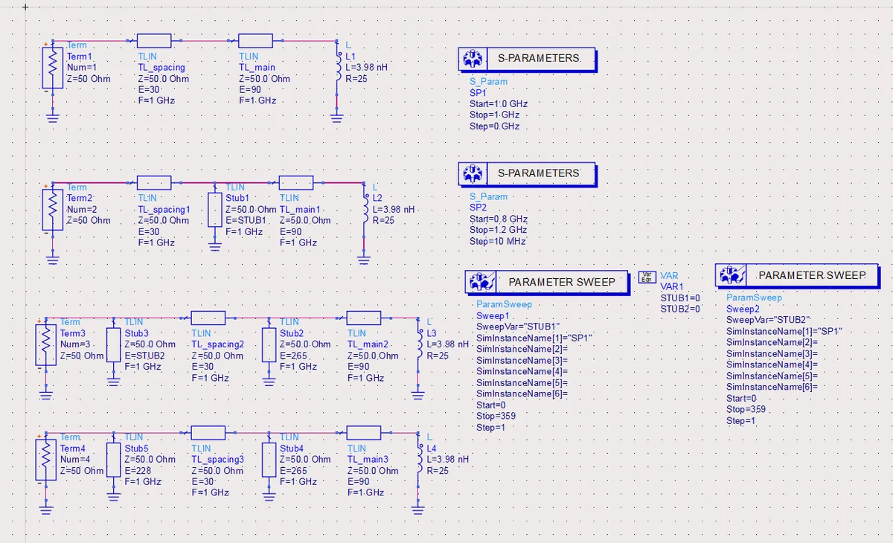
Theoretical Background
The network consists of a 30° line section from the load to the first stub, a first shunt stub, a fixed 90° line section, and a second shunt stub. The first stub moves the admittance to a point that can be transformed through the fixed 90° section and completed by the second stub. The final goal is again:
Manual Smith Chart Design
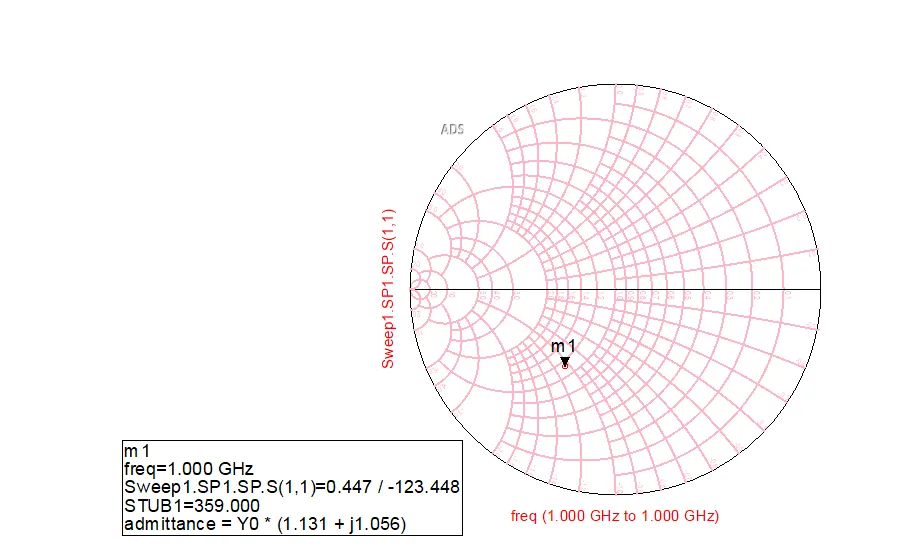
After the fixed 30° line section, the admittance at the first stub location is approximately \(1.131+j1.056\).
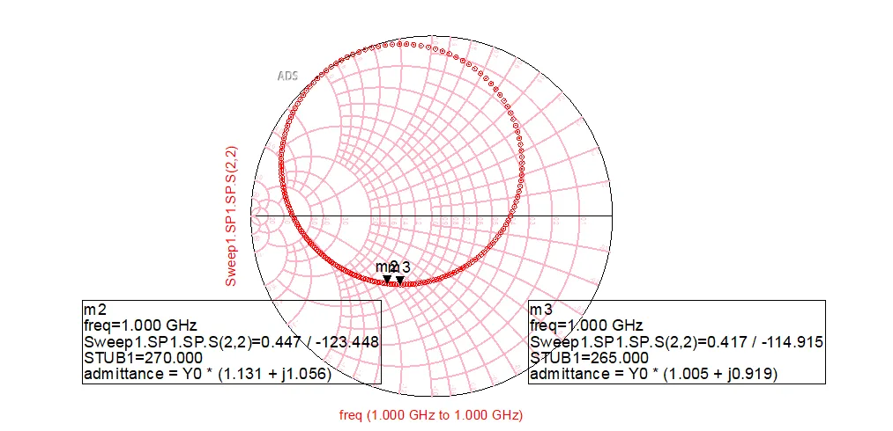
The first short-circuited shunt stub is swept from 0° to 359°. A length of approximately 270° moves the normalized admittance to about \(1.005+j0.919\), a point that can be completed by the second stub after the fixed 90° spacing section.
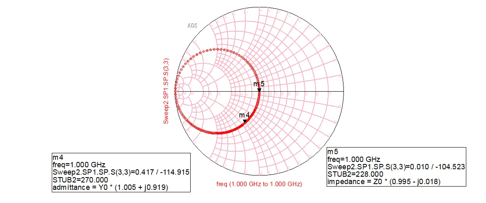
The second short-circuited shunt stub is then swept to cancel the remaining susceptance. A length of approximately 228° produces a final normalized impedance of about \(0.995-j0.018\), which is very close to a perfect match.
Simulation Results and Discussion
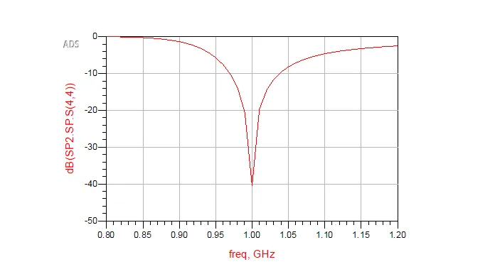
At 1 GHz, the reflection coefficient reaches approximately -40 dB, indicating an excellent match. As with the single-stub case, the residual mismatch is mainly due to the 1° resolution used in the manual sweeps and marker selection. Away from 1 GHz, all line sections and stubs change electrical length, causing the match to degrade.
Final Design Parameters
| Load impedance | \(25+j25\ \Omega\) |
|---|---|
| System impedance | 50 Ω |
| Distance from load to first stub | 30° |
| Distance between stubs | 90° |
| First stub length | 270° |
| Second stub length | 228° |
| Stub type | Short-circuited shunt stubs |
| Design frequency | 1 GHz |
Key Takeaways
- Double-stub matching enables impedance matching with fixed stub locations.
- The two stub lengths provide independent tuning variables.
- The first stub moves the admittance to a point that can be completed by the second stub.
- The second stub cancels the remaining susceptance and finalizes the match.
- Some loads may not be matchable for a given stub spacing.
- ADS optimization can solve this automatically, but the manual design better illustrates the Smith chart methodology.
Mini Lab 7: Final Comparison of Matching Techniques
The final mini lab overlays the input reflection coefficient for the quarter-wave transformer, single-stub matching network, and double-stub matching network. Each method successfully produces a strong match at 1 GHz, but they differ in complexity, flexibility, and bandwidth.
Simulation Results and Discussion
The quarter-wave transformer reaches the deepest null, approximately -100 dB, because its parameters were calculated analytically for the real 100 Ω load. In this ideal simulation, the remaining reflection is limited mostly by numerical precision.
The single-stub and double-stub networks both reach approximately -40 dB at the design frequency. This is still an excellent match and corresponds to a very small reflected power. Their residual mismatch is mainly due to the manual 1° sweep resolution used when selecting line and stub lengths.
The quarter-wave transformer also shows the broadest response in this example, but it is limited to matching real impedances. The single-stub network can match complex loads but requires a specific stub location. The double-stub network is more complex but allows the stub locations to be fixed, which is often useful in practical layouts.
| Technique | Matches complex loads? | Fixed stub locations? | Typical complexity | Comment |
|---|---|---|---|---|
| Quarter-wave transformer | No, generally for real loads | N/A | Low | Simple and strong match at one design frequency |
| Single-stub matching | Yes | No | Moderate | Flexible, but stub placement must be selected |
| Double-stub matching | Yes | Yes | Higher | More layout-friendly when stub locations are constrained |
Key Takeaways
- Multiple transmission line matching techniques can achieve excellent performance at the design frequency.
- Quarter-wave transformers are simple and effective for real loads, but are frequency dependent.
- Single-stub matching offers more flexibility for complex loads.
- Double-stub matching is useful when stub positions must remain fixed.
- In practical systems, the best method is often determined by physical layout constraints, bandwidth requirements, and load complexity.
Conclusion
This project demonstrated how transmission lines can be used not only to transport signals, but also to transform impedances and eliminate reflections. Starting with the reflection coefficient and ideal terminations, the simulations progressed through line-length transformations, microstrip implementation, and classical matching networks.
The main lesson is that RF design is both mathematical and visual. Equations explain the behavior, while ADS and the Smith chart make it possible to see how impedance, phase, and reflection evolve through a network.
Whether designing antennas, amplifiers, filters, interconnects, or high-speed digital hardware, the concepts explored here form a practical foundation for understanding how signals behave when wires stop acting like ideal wires.
Back to Portfolio